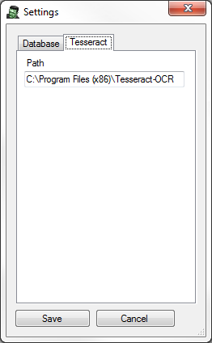
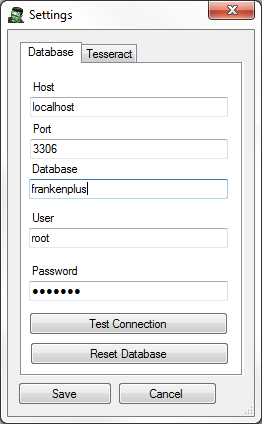
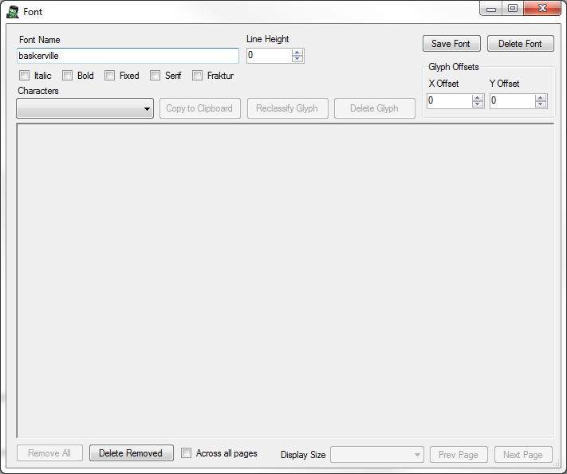
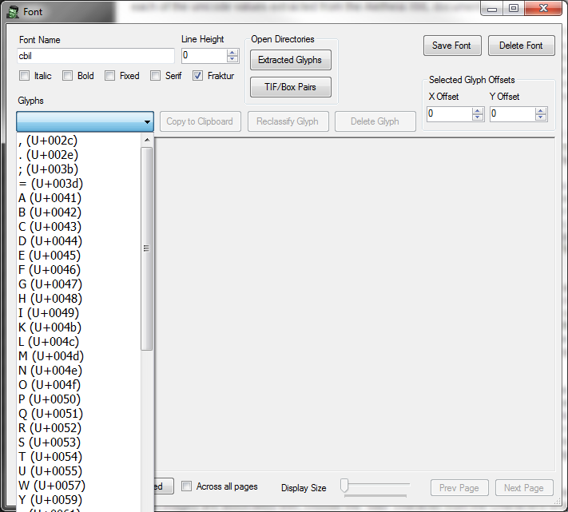
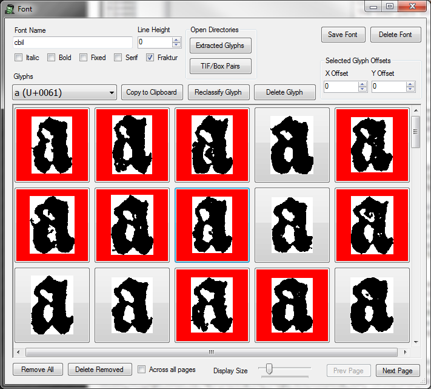
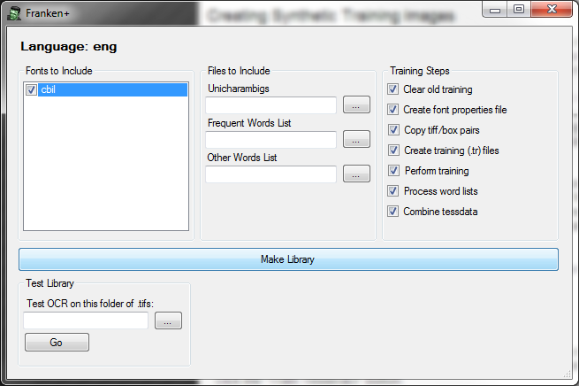

Franken+ was developed by Bryan Tarpley at the Initiative for the Digital Humanities, Media, and Culture at Texas A&M University. It is a specialized tool designed to allow users to perform OCR on historic fonts. Franken+ ingests output from PRIMALab's Aletheia. Aletheia allows the user to open a scanned text document, binarize it, and draw boundaries around each individual character (among many other things). Franken+ currently only works with Aletheia projects wherein the characters have been outlined using polygons (not boxes). Once each character has been bounded appropriately, Aletheia saves the project as an XML file which adheres to PRIMA's PAGE XML format. Provided the binarized image and the resulting XML file generated with Aletheia, Franken+ extracts individual .tif images for each letter blocked-out using Aletheia, giving the user the opportunity to hand-pick the best instances of each letter (thus producing a "font" consisting of only hand-picked images). Using this font, Franken+ can then create synthetic TIF images of text "printed" using this font, with corresponding BOX files, which are then used to train Google's open-source Tesseract OCR engine in order to OCR images of documents printed with the relevant historic font. Using these synthetic images and their corresponding BOX files, Franken+ then automates the Tesseract font training process and allows a user to test this font.
Franken+ is a Windows application written in C# requiring .NET Framework 4.5. Windows 8 has this framework installed already, but for Windows 7 and earlier, you may need to install .NET Framework 4.5 before running.
For data management, Franken+ uses MySQL, and was developed using MySQL Community Server 5.6. The SQL commands used are pretty generic, so most versions of MySQL should work. That said, any client machine running Franken+ must be able to connect to a MySQL server with a username given enough privileges to create/drop databases, create/drop tables, and then insert/update/delete on those tables. For this purpose, Franken+ has only been tested on local installs of MySQL using the root username. The latest version of MySQL Community Server can be downloaded here.
In order to train Tesseract and test OCR, Franken+ requires that the Tesseract OCR engine be installed. Franken+ has been tested only with Tesseract OCR 3.02. Franken+ assumes that Tesseract binaries are installed in the C:\Program Files(x86)\Tesseract-OCR directory, but the path to Tesseract can be set by going to Menu->Settings->Tesseract in Franken+. Tesseract can be downloaded here.
Depending on the size of your font training set, you should probably allocate something like 1GB of disk space on the drive containing the Windows Users directory (almost always C:). Franken+ extracts individual .tif images for each letter outlined via the Page XML format, and these are stored along with any synthetically created .tif images and Tesseract training files in the Users\[user]\My Documents\Franken+ directory.
Upon first running Franken+, you may get a message about connecting to the database. To ensure that Franken+ can communicate with the MySQL database, go to Menu->Settings and fill out the parameters accordingly. Click the "Test Connection" button to verify connectivity. Because this is the first run of Franken+, you may get a message informing you that it connected to the database server, but was not able to find the Franken+ database. To create the Franken+ database, click "Reset Database" and then "Yes". This will create the database and set up the appropriate tables.
In order to ingest Aletheia Page XML files, you must first create a "font" in Franken+. To do so, under the "Font" dropdown box on the upper right, click the "Create" button. This should bring up a font window. Give this font a name (no spaces or strange characters), and indicate via the checkboxes whether this font is Italic, Bold, Fixed, Serif, or Fraktur. Click "Save Font." It is also recommended that you create a "language" as well. To do so, click the "Create Language" button under the "Language" dropdown on the upper left. Give your language a name and click "OK."
Franken+ has only been tested on Aletheia documents in which the .tif images have been binarized (black and white), and in which each letter has been blocked out using polygons (not boxes) and properly assigned a unicode value. In order for Franken+ to ingest the resulting data, the .tif image and its corresponding Aletheia PageXML document must be named the same. For instance:
It may be the case that during the Aletheia training process, certain letters were consistently given a bad unicode value. In order to substitute these characters for better ones, you can make use of the Unicode Substitution feature by clicking the "Create New" button under the Unicode Substitutions section. In order to use these substitutions while ingesting Aletheia output, make sure the "Use with ingestion" checkbox has been checked.
Place as many .tiff/.xml file pairs that you'd like to ingest for a given font in a single directory. From the language dropdown, choose the language you created, and from the font dropdown, choose the font you created. Under Aletheia TIFF/XML, click the browse ("...") button to the right of the Input Folder field, and select the folder containing the .tif/.xml file pairs you wish to ingest. Click "Ingest Glyphs."
Depending on how many .tiff/.xml file pairs you are ingesting, this process may take some time. It employs a special image extractor developed by PRIMALabs which creates an individual .tif image for each letter blocked out in Aletheia, and stores these images in the \Users\[user]\My Documents\Franken+\GlyphExtraction\Output directory. Once having extracted the images for a document, it then reads the Aletheia XML and attributes the appropriate unicode value for each image, storing the results in the MySQL database. It does this for each .tif/.xml file in the folder you specified, and a progress window is displayed.
Once the process is complete, you will be able to winnow out "bad" images of a given letter.
Once you have ingested Aletheia .tif/.xml file pairs for a given font, choose the font from the font dropdown and click the "Edit" button. This will open the font window. Click the Characters dropdown--you should see a list of each of the unicode values extracted from the Aletheia XML documents.
Choose a character from the dropdown box. The lower pane will populate with each of the image instances extracted. These images may be larger than the buttons created for each of them--you can adjust the button size by choosing the appropriate size from the "Display Size" dropdown toward the bottom. To eliminate a given image, simply click on it--the border surrounding that image will turn red, indicating that it has been "Removed." If the vast majority of the available images are of poor quality, you may click the "Remove All" button toward the bottom left which will mark all images as being removed. To keep (or un-remove) an image, click on it again and the border should turn green.
If many .tif/.xml documents have been ingested, it may be the case that there are hundreds of images available for each character. As such, Franken+ only loads in memory the first 200 instances of that character (for performance reasons). You may page through these 200 images by using the "Prev Page"/"Next Page" buttons.
Once you have removed/kept all images for that character, it is recommended that you delete the images that you have removed in order to improve performance and free disk space. To do this, you can click on the "Delete Removed" button. This will physically delete any images marked as delete and remove them from the database. If more than 200 images were extracted for this character, the additional images (up to 200) will now be available to look through. If you have kept enough "good" instances of a character for your purposes, you may check the "Across all pages" checkbox and then click "Delete Removed" if you have clicked the "Remove All" button previously.
Many characters have what are called "descenders," which are parts of the character which hang below the baseline. Common instances of those characters in the Western character set are the letters y, g, q, p, etc. To make sure they descend properly once you create synthetic training images, you may set a Y Offset for that character by selecting it in the Characters dropdown, and then putting a negative Y Offset (in pixels) in the "Y Offset" box toward the upper right. A typical offset for the letter y for instance, would be -20. For certain punctuation marks that need to hover above other letters (such as quotes and apostrophes), you may want to set a positive Y Offset.
It may be the case that you have a very good image of a letter, but that there are some pixel artifacts here and there due to bleed-through, etc., or that the image was incorrectly cropped. You may edit that image using your default .tif image editor by right-clicking that image and choosing "Edit." At this time, Microsoft Paint does not correctly edit these images, as it changes the .tif format and renders it unusable in the synthetic image creation process. As such, Franken+ image editing has only been tested using Adobe Photoshop. Once you have edited your image accordingly, save the image, go back to Franken+, and click OK--your image pane will refresh and your edits will be reflected.
It may be the case that a set of images was incorrectly classified as a character. To change which character these images are associated with, choose the "bad" character from the Characters dropdown and click the "Reclassify Glyph" button. This will allow you to either copy all images into an existing character or to assign them all to a new character altogether.
Sometimes during the Aletheia training process, certain pixel artifacts are incorrectly attributed a unicode value. To remedy these instances, you may delete a character altogether by choosing it from the Characters dropdown and clicking the "Delete Glyph" button.
Once you have fine-tuned your "font," you are ready to create synthetic .tif/.box pairs in order to train Tesseract. If, however, you need to delete a font altogether and start over, you may click the "Delete Font" button at the upper right.
Once you've made a good font set, you will want to create a set of synthetic .tif/.box file pairs for Tesseract training. To do so, you must first have a transcript, which is a plain text (.txt) file, usually containing ground truth text for a subset of the images you wish to OCR. This text document may contain as little or as much text as you'd like.
To create the synthetic images, select the transcript text file by clicking the browse ("...") button to the right of the Transcription Text field under the Synthesize TIFF/Box Pair section. Once you have selected your transcription text, click the "Create TIFF/Box Pairs" button. A progress window will appear, telling you which words are being written to the .tif/.box pairs. Depending on the size of your transcription file, this may take some time.
Once the process has completed, you may view the results by going to the \Users\[user]\My Documents\Franken+\TiffBoxPairs directory and opening one of the .tif images generated. It is common to find bad characters, characters with incorrect Y Offsets, etc. when creating your first synthetic images. Also, a text file called "unaccounted-for-characters.txt" will have been generated letting you know whether any characters exist in your transcript but not in your font set.
In order to use these .tif/.box file pairs for Tesseract training, you must leave these images in the directory above.
Once you have created a font, edited it appropriately, and then created synthetic .tif/.box file pairs, you are ready to train Tesseract. To do so, choose the language and font from the language and font dropdowns and click the "Train Tesseract" button.
All of the fonts for which you have created synthetic .tif/.box file pairs will be listed in the Choose Fonts pane. Check any of the fonts you'd like to use for this library. You may also create a frequent word list (.txt file, one entry per line) and a dictionary word list (.txt one entry per line). To use these word lists, make sure you have browsed for them and that there paths are in the Frequent Word List / Other Word List fields.
The Tesseract training process is composed of several steps, each one usually dependant on the step before. These steps have corresponding checkboxes which are all checked by default. To perform only certain steps of the training process, check the boxes you want. They are described below:
- Clear old training: This simply deletes all files associated with previous training attempts using the selected language.
- Create font properties file: This creates a font_properties file with one entry for each of the fonts you've selected
- Copy tif/box pairs: This copies all the synthetic .tif/.box file pairs you've created using Franken+ into the training directory
- Create training (tr) files: This uses Tesseract to create a training file for each .tif/.box pair
- Perform training: This uses Tesseract to create a unicharset file, perform shape clustering, mftraining, and cntraining--all using the .tr files created in the previous step.
- Process word lists: This uses Tesseract to create DAWG files for the frequent and other word lists.
- Combine tessdata: This takes all the previous training steps and combines the results into a .traineddata file for the selected language.
In order to test this library, you must first copy the resulting .traineddata file (found in \Users\[user]\My Documents\TrainingLibraries\[language] directory) to the tessdata folder in the Tesseract directory (usually found in C:\Program Files (x86)\Tesseract-OCR\tessdata). Once you have done so, prepare a directory containing any .tif images you'd like to OCR with your new library. Browse for this directory by clicking the browse ("...") button to the right of the "Test OCR on this folder of .tifs" field. Click the "Go" button. This process may take some time, depending on how many .tif images you are OCRing. The results are stored in .txt files of the same name as the .tif images being scanned (stored in the same directory).
It is possible to export/import fonts and synthetic .tif/.box file pairs you have created using Franken+. To export a font, select it from the Font dropdown. Go to Settings->Export font. This process may take some time, as it copies the necessary files, exports database data, and then creates a .zip file. The resulting .zip file can be found in \Users\[user]\My Documents\Franken+\Temp.
To import a font, go to Settings->Import Font. Select a .zip file created using the font export process. Give the font you are importing a unique font name (no spaces or strange characters). Franken+ will unzip the file, copy the .tif images, etc. to the appropriate places, and then save all other information in the database.
Should you have any questions, need help with the tool, or have a bug to report, please either email me (bptarpley@tamu.edu) or go here and leave a comment.
|
|